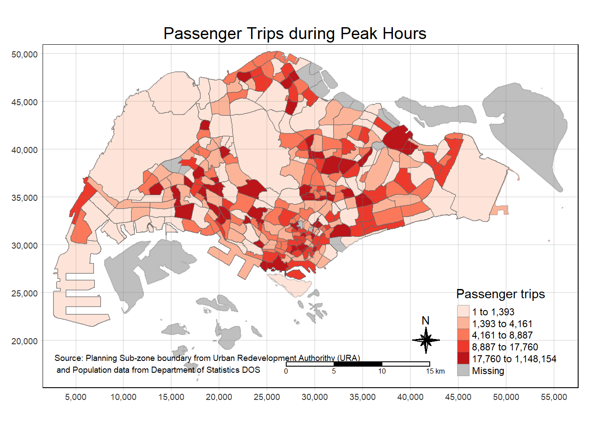
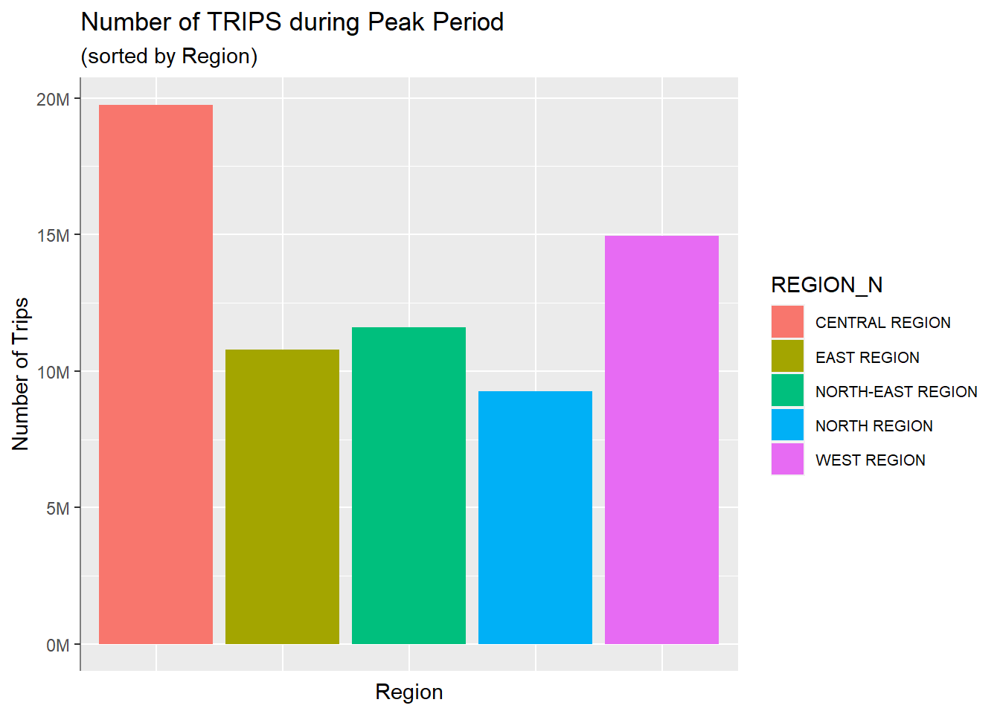
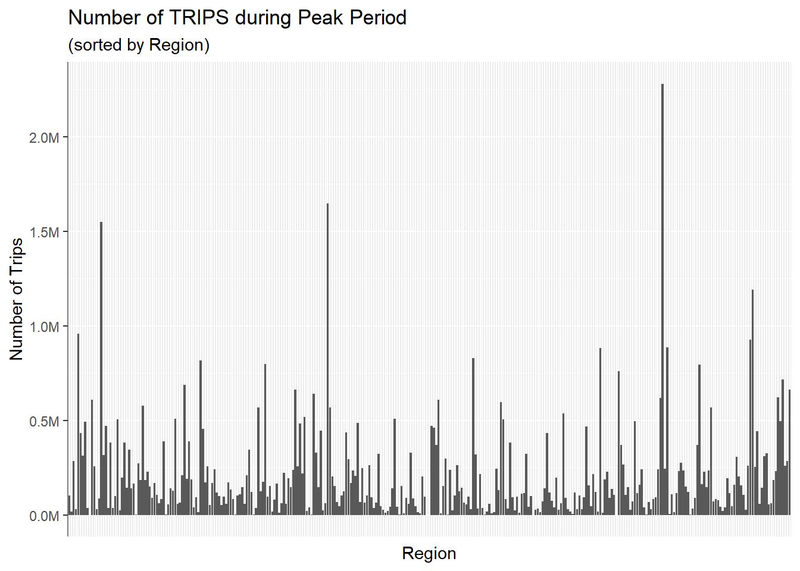
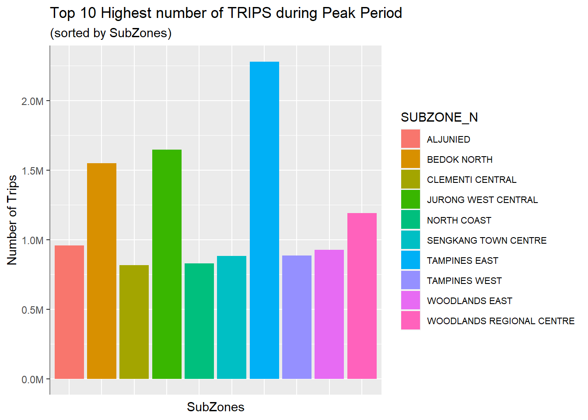
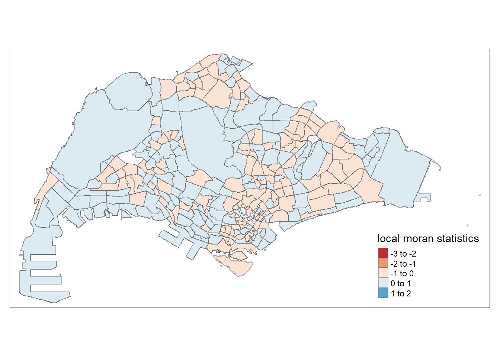
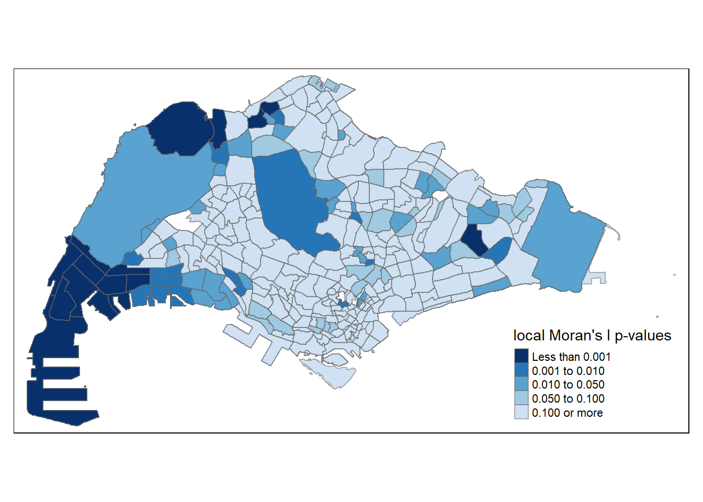
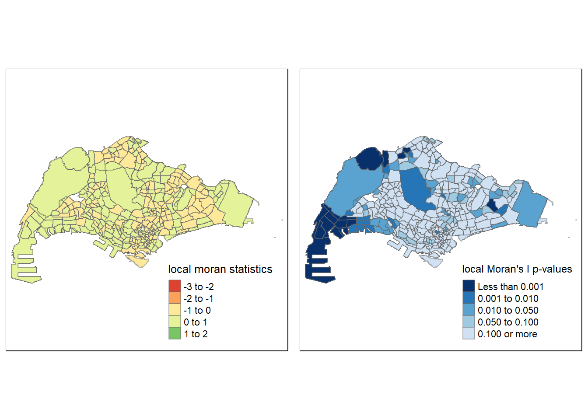
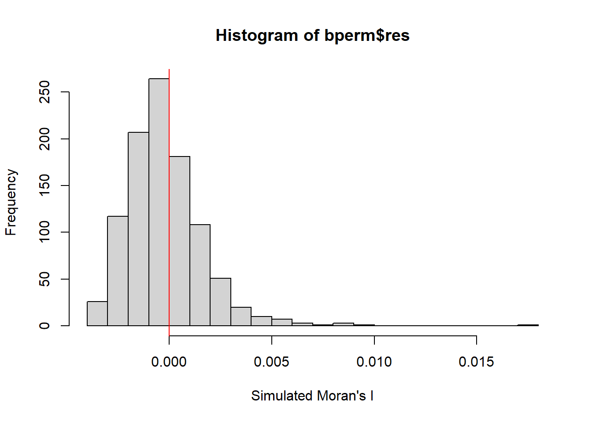

#loading in the necessary functions
pacman::p_load(tmap, sf, tidyverse, spdep)Take-home Exercise 1: Geospatial Analytics for Public Good
Introduction
Digitization of urban infrastructure has introduced new datasets from tracking of movement patterns, including space and time, through GPS and RFID. Understanding these datasets may potentially lead to a more informed decision making process in urban management and planning.
The purpose of this exercise is to perform Exploratory Spatial Data Analysis (ESDA), via appropriate Local Indicators of Spatial Association (GLISA) and Emerging Hot Spot Analysis (EHSA) to undercover the spatial and spatio-temporal mobility patterns of public bus passengers in Singapore.
The TASK
Geovisualisation and Analysis
With reference to the time intervals provided in the table below, compute the passenger trips generated by origin at the hexagon level,
Peak hour period Station entry time Weekday morning peak 6am to 9am Weekday afternoon peak 5pm to 8pm Weekend/holiday morning peak 11am to 2pm Weekend/holiday evening peak 4pm to 7pm Display the geographical distribution of the passenger trips by using appropriate geovisualisation methods,
Describe the spatial patterns revealed by the geovisualisation (not more than 200 words per visual).
Local Indicators of Spatial Association (LISA) Analysis
Compute LISA of the passengers trips generate by origin at hexagon level.
Display the LISA maps of the passengers trips generate by origin at hexagon level. The maps should only display the significant (i.e. p-value < 0.05)
With reference to the analysis results, draw statistical conclusions (not more than 200 words per visual).
Emerging Hot Spot Analysis(EHSA)
With reference to the passenger trips by origin at the hexagon level for the four time intervals given above:
Perform Mann-Kendall Test by using the spatio-temporal local Gi* values,
Prepared EHSA maps of the Gi* values of the passenger trips by origin at the hexagon level. The maps should only display the significant (i.e. p-value < 0.05).
With reference to the EHSA maps and data visualisation prepared, describe the spatial patterns reveled. (not more than 250 words per cluster).
Setting up
Geospatial Data Wrangling
Data Import, Extraction and Processing
Aspatial Data
Passenger Volume by Origin Destination Bus Stops from LTA DataMall
First download the raw data, and import into R environment using read_csv().
odbs <- read_csv("data/aspatial/origin_destination_bus_202308.csv")
#choosing Aug data as data setNext we will need to clean up the data sets, first by changing the data type to factor for easy sorting, filter and grouping:
odbs$ORIGIN_PT_CODE <- as.factor(odbs$ORIGIN_PT_CODE)
odbs$DESTINATION_PT_CODE <- as.factor(odbs$DESTINATION_PT_CODE)
#This changes the data type from chr to factor in the data fieldThe Data required are:
Weekday morning peak (6am to 9am)
Weekday afternoon peak (5pm-8pm)
Weekend/Holiday morning peak (11am to 2pm)
Weekend/Holiday evening peak (4pm to 7pm)
We will next filter our odbs to get the required data per above:
odbs_peak <- odbs %>%
filter((DAY_TYPE == "WEEKDAY" &
((TIME_PER_HOUR >=6 & TIME_PER_HOUR <=9) |
(TIME_PER_HOUR >=17 & TIME_PER_HOUR <=20))) |
DAY_TYPE == "WEEKENDS/HOLIDAY" &
((TIME_PER_HOUR >=11 & TIME_PER_HOUR <=14) |
(TIME_PER_HOUR >=16 & TIME_PER_HOUR <=19))) %>%
group_by(ORIGIN_PT_CODE) %>% #this allow me to extract all those trips generated
summarize(TRIPS = sum(TOTAL_TRIPS)) #derives new field to allow me to do the aggregationTo preserve the data set, we can save the output in rds format for future use:
write_rds(odbs_peak, "data/rds/odbs_peak.rds")To import into R environment:
odbs_peak <- read_rds("data/rds/odbs_peak.rds")Geospatial Data
- Bus Stop Location from LTA DataMall
busstop <- st_read(dsn = "data/geospatial",
layer = "BusStop") %>%
st_transform(crs = 3414)Reading layer `BusStop' from data source
`C:\cftoh\ISSS624\Take-home_Ex\Take-home_Ex1\data\geospatial'
using driver `ESRI Shapefile'
Simple feature collection with 5161 features and 3 fields
Geometry type: POINT
Dimension: XY
Bounding box: xmin: 3970.122 ymin: 26482.1 xmax: 48284.56 ymax: 52983.82
Projected CRS: SVY21 #the st_transform(crs = ?) function takes takes 2D ST_Geometry data as input and returns values converted into the spatial reference specified (new coordinate reference system) provided, in this case 3414 is the Projected coordinate system for SGglimpse(busstop)Rows: 5,161
Columns: 4
$ BUS_STOP_N <chr> "22069", "32071", "44331", "96081", "11561", "66191", "2338…
$ BUS_ROOF_N <chr> "B06", "B23", "B01", "B05", "B05", "B03", "B02A", "B02", "B…
$ LOC_DESC <chr> "OPP CEVA LOGISTICS", "AFT TRACK 13", "BLK 239", "GRACE IND…
$ geometry <POINT [m]> POINT (13576.31 32883.65), POINT (13228.59 44206.38),…- Hexagon, a hexagon layer of 250m is provided to replace the relative coarse and irregular Master Plan 2019 Planning Sub-zone GIS data set of URA.
mpsz <- st_read(dsn="data/geospatial",layer="MPSZ-2019") %>%
st_transform(crs = 3414)Reading layer `MPSZ-2019' from data source
`C:\cftoh\ISSS624\Take-home_Ex\Take-home_Ex1\data\geospatial'
using driver `ESRI Shapefile'
Simple feature collection with 332 features and 6 fields
Geometry type: MULTIPOLYGON
Dimension: XY
Bounding box: xmin: 103.6057 ymin: 1.158699 xmax: 104.0885 ymax: 1.470775
Geodetic CRS: WGS 84glimpse(mpsz)Rows: 332
Columns: 7
$ SUBZONE_N <chr> "MARINA EAST", "INSTITUTION HILL", "ROBERTSON QUAY", "JURON…
$ SUBZONE_C <chr> "MESZ01", "RVSZ05", "SRSZ01", "WISZ01", "MUSZ02", "MPSZ05",…
$ PLN_AREA_N <chr> "MARINA EAST", "RIVER VALLEY", "SINGAPORE RIVER", "WESTERN …
$ PLN_AREA_C <chr> "ME", "RV", "SR", "WI", "MU", "MP", "WI", "WI", "SI", "SI",…
$ REGION_N <chr> "CENTRAL REGION", "CENTRAL REGION", "CENTRAL REGION", "WEST…
$ REGION_C <chr> "CR", "CR", "CR", "WR", "CR", "CR", "WR", "WR", "CR", "CR",…
$ geometry <MULTIPOLYGON [m]> MULTIPOLYGON (((33222.98 29..., MULTIPOLYGON (…Data Cleaning and Transformation
Now we have got three data sets, namely
- odbs_peak : The total number of trips from the Origin Bus Stop during the specified peak period.
- busstop : The details of bus stop in Singapore, with the location.
- mpsz : The sub-zone boundary of URA Master Plan 2019.
We will next use st_intersection() for point and polygon overlay, to combine the busstop and mpsz data sets. This will provide us with output in point sf object.
Next, select() of dplyr package is uses to retain only BUS_STOP_N and SUBZONE_C in the busstop_mpsz sf data frame.
busstop_mpsz <- st_intersection(busstop, mpsz) %>%
select(BUS_STOP_N, SUBZONE_C) %>%
st_drop_geometry() #this removes the geometry (points) fieldglimpse(busstop_mpsz)Rows: 5,156
Columns: 2
$ BUS_STOP_N <chr> "13099", "13089", "06151", "13211", "13139", "13109", "1311…
$ SUBZONE_C <chr> "RVSZ05", "RVSZ05", "SRSZ01", "SRSZ01", "SRSZ01", "SRSZ01",…It is noted that busstop_mpsz has 5156 entries compared to busstop which has 5161 entries. This indicates that there are 5 bus stops that are excluded in the resultant data frame because they are outside of Singapore boundary (per mpsz).
Before moving to the next step, we should SAVE OUTPUT INTO RDS FORMAT :
write_rds(busstop_mpsz, "data/rds/busstop_mpsz.csv") Now we have got the busstop_mpsz data frame that shows the bus stops and their locations (in term of subzone), we will next combine this onto our our odbs_peak data frame which shows the total number of trips from particular bus stop during peak hour.
obs_peak <- left_join(odbs_peak, busstop_mpsz,
by = c("ORIGIN_PT_CODE" = "BUS_STOP_N")) %>%
rename(ORIGIN_BS = ORIGIN_PT_CODE,
ORIGIN_SZ = SUBZONE_C)Next, as data sanity, we check if any duplicating records:
duplicate <- obs_peak %>%
group_by_all() %>%
filter(n()>1) %>%
ungroup()We noted there is a total of 26 duplicating records, so we will need to only retain the unique value using the below:
obs_peak <- unique(obs_peak)This removed 13 (duplicate) records from the data frame, now we have got 5070 records that are all unique.
Next, we combine our obs_peak data frame onto the mpsz data frame to understand the total number of trips per origin bus stop during peak period in each planning sub zone per the Master Plan 2019 Planning Sub-zone GIS data set of URA.
mpsz_obs_peak <- left_join(mpsz,
obs_peak,
by = c("SUBZONE_C" = "ORIGIN_SZ"))Geospatial Analysis
Assessment point: to use the appropriate thematic and analytics mapping techniques and R functions introduced in class to analysis the geospatial data prepared. You will be assessed on your ability to derive analytical maps by using appropriate rate mapping techniques.
Choropleth Visualisation
Preparing a choropleth map showing the distribution of passenger trips at planning sub-zone level:
mpsz_obs_peak %>%
drop_na(TRIPS) #this is remove NA data, as it is noted that there are a number of NA data in TRIP column Simple feature collection with 5013 features and 8 fields
Geometry type: MULTIPOLYGON
Dimension: XY
Bounding box: xmin: 2667.538 ymin: 21448.47 xmax: 55941.94 ymax: 50256.33
Projected CRS: SVY21 / Singapore TM
First 10 features:
SUBZONE_N SUBZONE_C PLN_AREA_N PLN_AREA_C REGION_N
1 INSTITUTION HILL RVSZ05 RIVER VALLEY RV CENTRAL REGION
2 INSTITUTION HILL RVSZ05 RIVER VALLEY RV CENTRAL REGION
3 ROBERTSON QUAY SRSZ01 SINGAPORE RIVER SR CENTRAL REGION
4 ROBERTSON QUAY SRSZ01 SINGAPORE RIVER SR CENTRAL REGION
5 ROBERTSON QUAY SRSZ01 SINGAPORE RIVER SR CENTRAL REGION
6 ROBERTSON QUAY SRSZ01 SINGAPORE RIVER SR CENTRAL REGION
7 ROBERTSON QUAY SRSZ01 SINGAPORE RIVER SR CENTRAL REGION
8 ROBERTSON QUAY SRSZ01 SINGAPORE RIVER SR CENTRAL REGION
9 ROBERTSON QUAY SRSZ01 SINGAPORE RIVER SR CENTRAL REGION
10 ROBERTSON QUAY SRSZ01 SINGAPORE RIVER SR CENTRAL REGION
REGION_C ORIGIN_BS TRIPS geometry
1 CR 13089 7899 MULTIPOLYGON (((28481.45 30...
2 CR 13099 15531 MULTIPOLYGON (((28481.45 30...
3 CR 04321 10466 MULTIPOLYGON (((28087.34 30...
4 CR 06129 7568 MULTIPOLYGON (((28087.34 30...
5 CR 06151 6104 MULTIPOLYGON (((28087.34 30...
6 CR 06159 11722 MULTIPOLYGON (((28087.34 30...
7 CR 06169 14622 MULTIPOLYGON (((28087.34 30...
8 CR 13079 5238 MULTIPOLYGON (((28087.34 30...
9 CR 13109 16274 MULTIPOLYGON (((28087.34 30...
10 CR 13119 3949 MULTIPOLYGON (((28087.34 30...tm_shape(mpsz_obs_peak)+
tm_fill("TRIPS",
style = "quantile",
palette = "Reds",
title = "Passenger trips") +
tm_layout(main.title = "Passenger Trips during Peak Hours",
main.title.position = "center",
main.title.size = 1.2,
legend.height = 0.45,
legend.width = 0.35,
frame = TRUE) +
tm_borders(alpha = 0.3) +
tm_compass(type="8star", size = 2) +
tm_scale_bar() +
tm_grid(alpha =0.2) +
tm_credits("Source: Planning Sub-zone boundary from Urban Redevelopment Authorithy (URA)\n and Population data from Department of Statistics DOS",
position = c("left", "bottom"))
From the first glance of the geovisualization, we can observe that there are a few highly dense area which indicates high number of trips taken from those areas during peak period. The areas seem to be in the popular residential areas.
An extra step to look at the distribution of the total number of trips during peak period broken down by Region distribution.
mpsz_obs_peak %>%
drop_na(TRIPS) #this is remove NA dataSimple feature collection with 5013 features and 8 fields
Geometry type: MULTIPOLYGON
Dimension: XY
Bounding box: xmin: 2667.538 ymin: 21448.47 xmax: 55941.94 ymax: 50256.33
Projected CRS: SVY21 / Singapore TM
First 10 features:
SUBZONE_N SUBZONE_C PLN_AREA_N PLN_AREA_C REGION_N
1 INSTITUTION HILL RVSZ05 RIVER VALLEY RV CENTRAL REGION
2 INSTITUTION HILL RVSZ05 RIVER VALLEY RV CENTRAL REGION
3 ROBERTSON QUAY SRSZ01 SINGAPORE RIVER SR CENTRAL REGION
4 ROBERTSON QUAY SRSZ01 SINGAPORE RIVER SR CENTRAL REGION
5 ROBERTSON QUAY SRSZ01 SINGAPORE RIVER SR CENTRAL REGION
6 ROBERTSON QUAY SRSZ01 SINGAPORE RIVER SR CENTRAL REGION
7 ROBERTSON QUAY SRSZ01 SINGAPORE RIVER SR CENTRAL REGION
8 ROBERTSON QUAY SRSZ01 SINGAPORE RIVER SR CENTRAL REGION
9 ROBERTSON QUAY SRSZ01 SINGAPORE RIVER SR CENTRAL REGION
10 ROBERTSON QUAY SRSZ01 SINGAPORE RIVER SR CENTRAL REGION
REGION_C ORIGIN_BS TRIPS geometry
1 CR 13089 7899 MULTIPOLYGON (((28481.45 30...
2 CR 13099 15531 MULTIPOLYGON (((28481.45 30...
3 CR 04321 10466 MULTIPOLYGON (((28087.34 30...
4 CR 06129 7568 MULTIPOLYGON (((28087.34 30...
5 CR 06151 6104 MULTIPOLYGON (((28087.34 30...
6 CR 06159 11722 MULTIPOLYGON (((28087.34 30...
7 CR 06169 14622 MULTIPOLYGON (((28087.34 30...
8 CR 13079 5238 MULTIPOLYGON (((28087.34 30...
9 CR 13109 16274 MULTIPOLYGON (((28087.34 30...
10 CR 13119 3949 MULTIPOLYGON (((28087.34 30...agg_mpsz_obs_peak_byzones <- mpsz_obs_peak %>%
filter(TRIPS != "NA") %>%
group_by(REGION_N) %>%
summarize(TRIPS = sum(TRIPS)) %>%
st_drop_geometry()library(scales)
ggplot(agg_mpsz_obs_peak_byzones) +
geom_bar(aes(x=REGION_N,
y=TRIPS,
fill=REGION_N),
stat="identity") +
scale_y_continuous(labels = label_number(suffix = "M", scale = 1e-6)) +
labs(title="Number of TRIPS during Peak Period",
subtitle="(sorted by Region)",
y="Number of Trips",
x="Region")+
theme(axis.text.x=element_blank(),
axis.ticks.x=element_blank(),
axis.line.y=element_line(colour="grey50"),
legend.text = element_text(size = 8))
Although we have noted from previous data analysis that the highest number of trip originated from West Region, the above bar chart shows that in total the number of trips in central region is still the highest. Breaking it down further, we can see from the count below that there is significantly larger number of bus stop stations in Central Area, which likely to be the factor attributing to the highest aggregate number of trips across the regions. Another deduction is that the commuters taking trips in central area may take shorter bus ride, or make more transfers within the central region than those taking the bus stop other regions.
table(mpsz_obs_peak$REGION_N)
CENTRAL REGION EAST REGION NORTH-EAST REGION NORTH REGION
1404 820 792 677
WEST REGION
1339 How about if we do the analysis based on subzone?
mpsz_obs_peak %>%
drop_na(TRIPS) #this is remove NA dataSimple feature collection with 5013 features and 8 fields
Geometry type: MULTIPOLYGON
Dimension: XY
Bounding box: xmin: 2667.538 ymin: 21448.47 xmax: 55941.94 ymax: 50256.33
Projected CRS: SVY21 / Singapore TM
First 10 features:
SUBZONE_N SUBZONE_C PLN_AREA_N PLN_AREA_C REGION_N
1 INSTITUTION HILL RVSZ05 RIVER VALLEY RV CENTRAL REGION
2 INSTITUTION HILL RVSZ05 RIVER VALLEY RV CENTRAL REGION
3 ROBERTSON QUAY SRSZ01 SINGAPORE RIVER SR CENTRAL REGION
4 ROBERTSON QUAY SRSZ01 SINGAPORE RIVER SR CENTRAL REGION
5 ROBERTSON QUAY SRSZ01 SINGAPORE RIVER SR CENTRAL REGION
6 ROBERTSON QUAY SRSZ01 SINGAPORE RIVER SR CENTRAL REGION
7 ROBERTSON QUAY SRSZ01 SINGAPORE RIVER SR CENTRAL REGION
8 ROBERTSON QUAY SRSZ01 SINGAPORE RIVER SR CENTRAL REGION
9 ROBERTSON QUAY SRSZ01 SINGAPORE RIVER SR CENTRAL REGION
10 ROBERTSON QUAY SRSZ01 SINGAPORE RIVER SR CENTRAL REGION
REGION_C ORIGIN_BS TRIPS geometry
1 CR 13089 7899 MULTIPOLYGON (((28481.45 30...
2 CR 13099 15531 MULTIPOLYGON (((28481.45 30...
3 CR 04321 10466 MULTIPOLYGON (((28087.34 30...
4 CR 06129 7568 MULTIPOLYGON (((28087.34 30...
5 CR 06151 6104 MULTIPOLYGON (((28087.34 30...
6 CR 06159 11722 MULTIPOLYGON (((28087.34 30...
7 CR 06169 14622 MULTIPOLYGON (((28087.34 30...
8 CR 13079 5238 MULTIPOLYGON (((28087.34 30...
9 CR 13109 16274 MULTIPOLYGON (((28087.34 30...
10 CR 13119 3949 MULTIPOLYGON (((28087.34 30...agg_mpsz_obs_peak_bysubzones <- mpsz_obs_peak %>%
filter(TRIPS != "NA") %>%
group_by(SUBZONE_N) %>%
summarize(TRIPS = sum(TRIPS)) %>%
st_drop_geometry()We can see there is a total of 313 subzones, once aggregated.
library(scales)
ggplot(agg_mpsz_obs_peak_bysubzones) +
geom_bar(aes(x=SUBZONE_N,
y=TRIPS),
stat="identity") +
scale_y_continuous(labels = label_number(suffix = "M", scale = 1e-6)) +
labs(title="Number of TRIPS during Peak Period",
subtitle="(sorted by Region)",
y="Number of Trips",
x="Region")+
theme(axis.text.x=element_blank(),
axis.ticks.x=element_blank(),
axis.line.y=element_line(colour="grey50"),
legend.text = element_text(size = 8))
top_n(agg_mpsz_obs_peak_bysubzones, n=10, TRIPS) %>%
ggplot(., aes(x=SUBZONE_N,
y=TRIPS,
fill=SUBZONE_N))+
geom_bar(stat='identity') +
scale_y_continuous(labels = label_number(suffix = "M", scale = 1e-6)) +
labs(title="Top 10 Highest number of TRIPS during Peak Period",
subtitle="(sorted by SubZones)",
y="Number of Trips",
x="SubZones")+
theme(axis.text.x=element_blank(),
axis.ticks.x=element_blank(),
axis.line.y=element_line(colour="grey50"),
legend.text = element_text(size = 8))
Geovisualisation and Geocommunication
Assessment point: you will be assessed on your ability to communicate the complex spatial statistics results in business friendly visual representations. This course is geospatial centric, hence, it is important for you to demonstrate your competency in using appropriate geovisualisation techniques to reveal and communicate the findings of your analysis
Computing Contiguity Spatial Weight
Before we can compute the global spatial autocorrelation statistics, we need to construct a spatial weights of the study area.
To compute Queen contiguity weight matrix:
mpsz_obs_peak <- mpsz_obs_peak %>%
drop_na(TRIPS) #this is remove NA data
wm_q <- poly2nb(mpsz_obs_peak,
queen=TRUE)
summary(wm_q)Neighbour list object:
Number of regions: 5013
Number of nonzero links: 792276
Percentage nonzero weights: 3.152689
Average number of links: 158.0443
Link number distribution:
8 14 20 23 24 25 27 28 29 30 31 32 33 34 35 37 38 39 40 41
1 2 3 2 5 1 1 7 5 12 5 3 7 8 6 4 5 2 5 7
45 46 47 48 49 50 51 52 53 54 56 57 59 61 62 63 64 65 67 68
33 8 10 15 20 18 35 6 11 33 14 9 11 9 15 7 23 7 35 7
71 72 73 74 75 76 77 78 79 80 81 82 83 84 86 87 88 89 90 91
18 10 26 9 3 28 24 31 7 19 30 64 17 7 95 34 21 5 15 29
92 93 94 95 97 98 99 100 101 102 103 104 105 106 107 108 109 111 112 113
39 20 25 39 39 68 47 18 38 16 3 56 50 59 27 53 48 23 18 26
116 117 118 119 120 121 123 124 125 126 127 128 129 130 131 132 133 134 136 138
27 77 16 64 16 105 32 17 54 12 31 33 77 64 56 11 6 65 39 82
139 140 141 142 143 144 145 146 148 150 151 152 153 155 156 157 158 162 163 164
30 32 55 5 25 19 30 43 53 55 25 53 49 11 17 52 14 15 16 55
166 167 168 169 171 172 173 174 175 176 177 178 185 186 187 192 195 196 200 207
34 120 16 37 58 14 20 24 37 10 15 36 19 16 20 87 19 18 21 5
210 212 215 223 226 229 230 232 234 235 236 240 242 245 247 251 256 257 265 284
57 41 45 27 103 9 38 6 23 51 34 15 4 37 69 18 27 19 36 59
291 295 311 315 330 344 361 362
86 80 43 35 51 78 54 83
1 least connected region:
171 with 8 links
83 most connected regions:
2274 2275 2276 2277 2278 2279 2280 2281 2282 2283 2284 2285 2286 2287 2288 2289 2290 2291 2292 2293 2294 2295 2296 2297 2298 2299 2300 2301 2302 2303 2304 2305 2306 2307 2308 2309 2310 2311 2312 2313 2314 2315 2316 2317 2318 2319 2320 2321 2322 2323 2324 2325 2326 2327 2328 2329 2330 2331 2332 2333 2334 2335 2336 2337 2338 2339 2340 2341 2342 2343 2344 2345 2346 2347 2348 2349 2350 2351 2352 2353 2354 2355 2356 with 362 linksRow-standardised weights matrix
To prepare for the next analysis, we need to assign weights to each neighboring polygon. In our case, each neighboring polygon will be assigned equal weight (style=“W”). This is accomplished by assigning the fraction 1/(#ofneighbors) to each neighboring county then summing the weighted income values.
rswm_q <- nb2listw(wm_q,
style="W",
zero.policy = TRUE)
rswm_qCharacteristics of weights list object:
Neighbour list object:
Number of regions: 5013
Number of nonzero links: 792276
Percentage nonzero weights: 3.152689
Average number of links: 158.0443
Weights style: W
Weights constants summary:
n nn S0 S1 S2
W 5013 25130169 5013 80.28508 20301.85Local Indicators of Spatial Association (LISA) Analysis
Compute LISA of the passengers trips generate by origin at hexagon level.
Display the LISA maps of the passengers trips generate by origin at hexagon level. The maps should only display the significant (i.e. p-value < 0.05)
With reference to the analysis results, draw statistical conclusions (not more than 200 words per visual).
LISA are statistics that evaluate the existence of clusters in the spatial arrangement of a given variable. In this case we are studying the number of trips rates among various regions in Singapore in the rates mean that there are areas that have higher or lower rates than is to be expected by chance alone; that is, the values occurring are above or below those of a random distribution in space.
We will apply appropriate LISA, especially local Moran’I to detect cluster and/or outlier from number of trips during peak period in various subzones in Singapore.
Computing Local Moran’s I
To compute local Moran’s I, the localmoran() function of spdep will be used. It computes Ii values, given a set of zi values and a listw object providing neighbour weighting information for the polygon associated with the zi values.
The code chunks below are used to compute local Moran’s I of Number of Trips during peak hour at the subzone level.
fips <- order(mpsz_obs_peak$SUBZONE_N)
localMI <- localmoran(mpsz_obs_peak$TRIPS, rswm_q)
head(localMI) Ii E.Ii Var.Ii Z.Ii Pr(z != E(Ii))
1 0.016983926 -4.900889e-06 1.223744e-03 0.4856441 0.6272196
2 -0.008057852 -9.060797e-07 2.262475e-04 -0.5356468 0.5922027
3 0.005090243 -1.320268e-06 1.212684e-04 0.4623569 0.6438254
4 0.010153111 -5.527627e-06 5.077178e-04 0.4508420 0.6521035
5 0.012608774 -8.751795e-06 8.038581e-04 0.4450251 0.6563016
6 0.002812667 -3.944505e-07 3.623084e-05 0.4673477 0.6402512Now we have the the localMI, to create the local Moran’s I map, we will first append the local Moran’s I dataframe (i.e. localMI) onto the mpsz_obs_peak DataFrame:
mpsz_obs_peak.localMI <- cbind(mpsz_obs_peak,localMI) %>%
rename(Pr.Ii = Pr.z....E.Ii..)Mapping local Moran’s I values
To plot the local Moran’s I values:
tm_shape(mpsz_obs_peak.localMI) +
tm_fill(col = "Ii",
style = "pretty",
palette = "RdBu",
title = "local moran statistics") +
tm_borders(alpha = 0.5)
Mapping local Moran’s I p-values
The choropleth shows there is evidence for both positive and negative Ii values. However, it is useful to consider the p-values for each of these values, as consider above.
The code chunks below produce a choropleth map of Moran’s I p-values by using functions of tmap package.
tm_shape(mpsz_obs_peak.localMI) +
tm_fill(col = "Pr.Ii",
breaks=c(-Inf, 0.001, 0.01, 0.05, 0.1, Inf),
palette="-Blues",
title = "local Moran's I p-values") +
tm_borders(alpha = 0.5)
Mapping both local Moran’s I values and p-values
localMI.map <- tm_shape(mpsz_obs_peak.localMI) +
tm_fill(col = "Ii",
style = "pretty",
title = "local moran statistics") +
tm_borders(alpha = 0.5)
pvalue.map <- tm_shape(mpsz_obs_peak.localMI) +
tm_fill(col = "Pr.Ii",
breaks=c(-Inf, 0.001, 0.01, 0.05, 0.1, Inf),
palette="-Blues",
title = "local Moran's I p-values") +
tm_borders(alpha = 0.5)
tmap_arrange(localMI.map, pvalue.map, asp=1, ncol=2)
Computing Monte Carlo Moran’s I
set.seed(1234)
bperm= moran.mc(mpsz_obs_peak$TRIPS,
listw=rswm_q,
nsim=999,
zero.policy = TRUE,
na.action=na.omit)
bperm
Monte-Carlo simulation of Moran I
data: mpsz_obs_peak$TRIPS
weights: rswm_q
number of simulations + 1: 1000
statistic = 0.017363, observed rank = 1000, p-value = 0.001
alternative hypothesis: greaterVisualising Monte Carlo Moran’s I
mean(bperm$res[1:999])[1] -0.0002330182var(bperm$res[1:999])[1] 3.14809e-06summary(bperm$res[1:999]) Min. 1st Qu. Median Mean 3rd Qu. Max.
-0.0037965 -0.0013658 -0.0004617 -0.0002330 0.0006027 0.0090886 hist(bperm$res,
freq=TRUE,
breaks=20,
xlab="Simulated Moran's I")
abline(v=0,
col="red") 